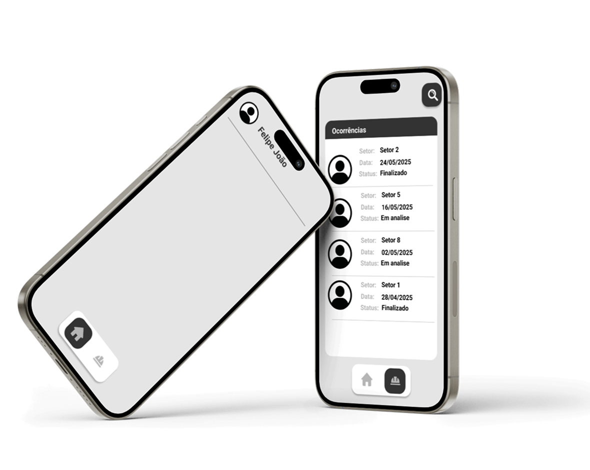
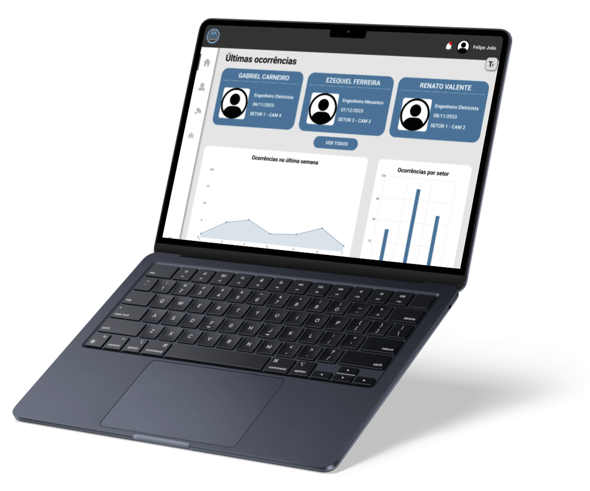

Tecnologia a Serviço da Vida
A segurança no ambiente industrial é uma prioridade. Pensando nisso,
desenvolvemos um aplicativo que une tecnologia e proteção através da
visão computacional. Com ele, é possível identificar em tempo real a
ausência de capacetes, promovendo um ambiente mais seguro e consciente
para todos.
💧
Visão Computacional
O Vigillatus utiliza inteligência artificial e visão computacional
para monitorar áreas industriais e detectar automaticamente a falta
de capacetes. Essa tecnologia simula a visão humana com precisão.
🌞
Facilidade
A interface intuitiva permite que qualquer profissional consiga
utilizar o sistema com poucos cliques. É rápido de instalar, fácil
de configurar e pode ser integrado às câmeras já existentes na
fábrica.
🧪
Segurança
Mais do que tecnologia, entregamos prevenção. A identificação
imediata de riscos contribui para reduzir acidentes e preservar
vidas, tornando o ambiente de trabalho mais seguro e eficiente.
Soluções Inteligentes para um Ambiente Mais Seguro
Sistemas inteligentes estão cada vez mais presentes no dia a dia das
indústrias, automatizando processos e aumentando a eficiência.
Pensando nisso, desenvolvemos uma solução completa que utiliza visão
computacional para identificar, em tempo real, a ausência de
capacetes. Unimos tecnologia, mobilidade e gestão para transformar a
segurança do trabalho de forma prática e eficaz.

Aplicativo Mobile
Com o app mobile, a segurança está na palma da sua mão.
Supervisores e responsáveis podem acompanhar alertas em tempo
real, receber notificações instantâneas sobre a ausência de
capacetes e visualizar registros diretamente pelo celular. Ideal
para quem precisa de mobilidade sem abrir mão do controle.
Plataforma Web
Na versão web, é possível acessar painéis completos com
análises, relatórios e registros históricos de ocorrências. Tudo
organizado para facilitar a tomada de decisões e o monitoramento
contínuo da segurança. Uma ferramenta robusta para gestão
eficiente e centralizada.

Visão Computacional
A visão computacional é uma tecnologia que permite que sistemas
“enxerguem” e interpretem imagens como um ser humano faria. No nosso
aplicativo, ela é utilizada para identificar automaticamente a
ausência de capacetes em ambientes industriais, atuando como uma
vigilância constante e inteligente. Uma inovação que transforma
câmeras comuns em ferramentas ativas de prevenção de acidentes.